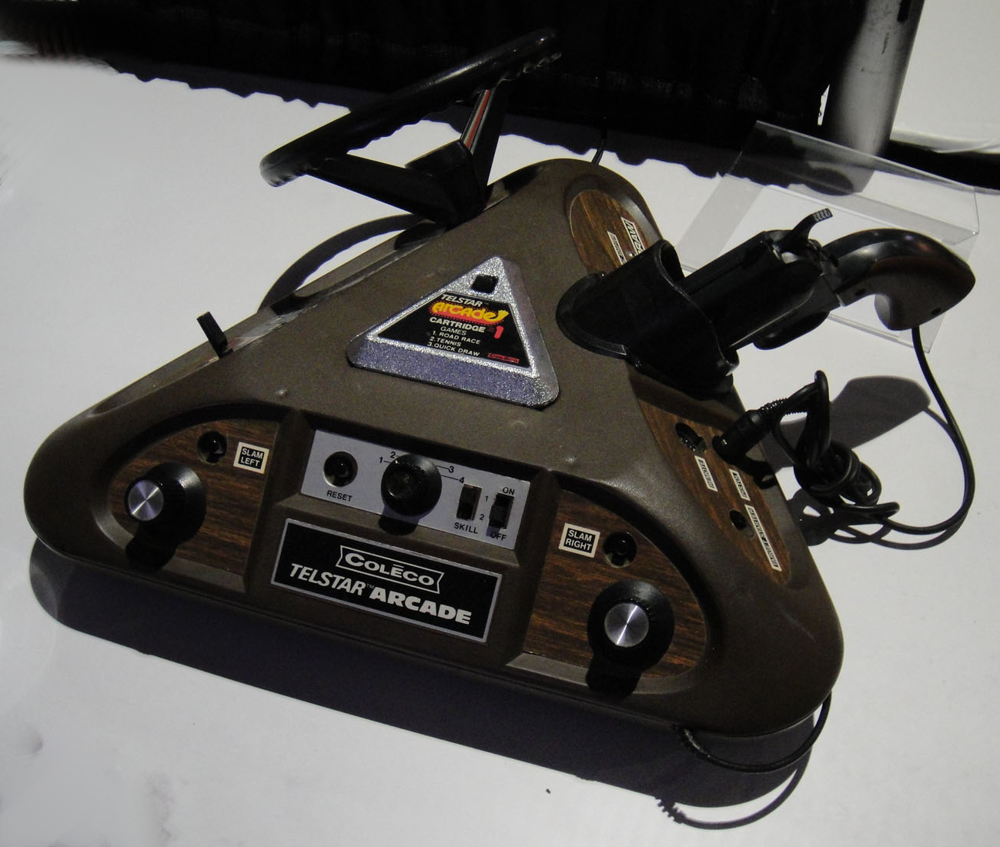
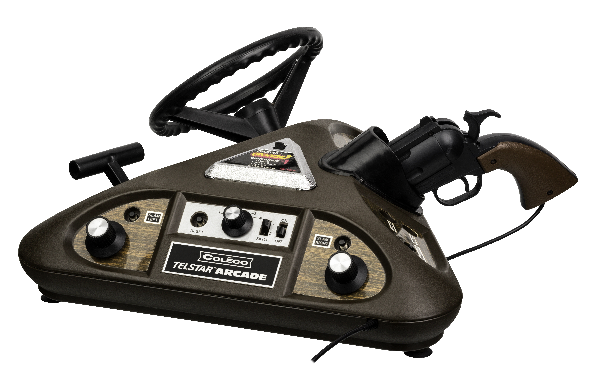

Coleco Telstar Arcade
The triangular 3-in-1 console whose body WAS the controller — rotate to play

Overview
The Coleco Telstar Arcade was the flagship of Coleco's Telstar series of first-generation home video game consoles. Unlike any other console, it was built as a large triangular prism (7.5 x 18 x 16 inches), with each of its three faces dedicated to a completely different type of game controller: a steering wheel with gear shifter for racing, a light gun with holster for shooting, and two paddle controllers for Pong-style games. To switch game genres, the player physically rotated the entire console to face a different side.
Even more unusually, the cartridges themselves contained the CPU — MOS Technology MPS-7600 microcontrollers, each with its own ROM. The base console served only as a power supply, RF modulator, and controller interface. Only four triangular cartridges were released, covering 13 games across genres. The system was designed by Ralph H. Baer's engineering team at Sanders Associates under contract to Coleco, with day-to-day engineering led by Dunc Withun.
The Telstar Arcade embodies the principle of 'form-factor-as-affordance': the physical shape of the device directly communicates its interaction modes. It is a fascinating alternate path in console design — one where the hardware itself, rather than interchangeable peripherals, defines the interaction paradigm. In 1977 it attempted to bridge the dedicated Pong-console era and the cartridge era, but its cartridge-as-CPU architecture made games expensive to manufacture and the library was minuscule compared to the Atari 2600. Today it stands as a uniquely creative and unrepeated experiment in hardware-as-interface design.
Deep dive
The Telstar Arcade emerged from Ralph H. Baer's relationship with Coleco. After Baer introduced Coleco president Arnold Greenberg to General Instrument's AY-3-8500 Pong-on-a-chip in 1975, Coleco became GI's first customer and launched the original Telstar in 1976 — selling over one million units at $50 each. Following an FCC compliance crisis in 1976 where Baer personally solved a radio-frequency interference problem threatening $30 million in Coleco inventory, Greenberg contracted Baer's team at Sanders Associates to develop next-generation consoles. Baer assembled a small engineering unit led by Dunc Withun at Sanders' Canal Street facility in Nashua, New Hampshire. They developed the triangular Telstar Arcade, the Telstar Combat, and a third console under the contract.
The Telstar Arcade was a triangular prism measuring approximately 7.5 x 18 x 16 inches and weighing 4 pounds. Each of the three faces held permanently integrated controls: Side A had two paddle controllers (rotary knobs) for Pong variants; Side B had a light gun stored in a built-in holster for target shooting games; Side C had a steering wheel and gear shifter for driving games — remarkably advanced for a 1977 home console. The player physically rotated the entire 4-pound console to switch between game modes. There was no separate controller — the console was the controller.
Unlike conventional cartridges that store ROM data for the console's processor to read, each Telstar Arcade cartridge contained its own dedicated CPU: a MOS Technology MPS-7600 series microcontroller with on-chip ROM. The base console provided only power, an RF modulator, and the controller interface. Four cartridge variants (MPS-7600-001 through -004) were manufactured, each with approximately 512 words of program memory. This meant each 'cartridge' was effectively a self-contained game system — buying a new cartridge was buying an entirely new computer. The architecture was both ahead of its time (prefiguring ideas about distributed computing) and commercially limiting (each cartridge was expensive to manufacture, and only four were released).
Only four cartridges were released: Cartridge 1 (pack-in) featured Road Race, Tennis, and Quickdraw. Cartridge 2 added Hockey, Handball, and Target — plus two additional hand controllers for four-player Tennis. Cartridge 3 featured Bonus Pinball, Shooting Gallery, Shoot the Bear, and Deluxe Pinball. Cartridge 4 offered Naval Battle, Blast Away, and Speedball. Cartridges cost $25 each. Additional games mentioned in contemporary buyer's guides — including a 25-game driving maze cartridge — were planned but never released.
The Telstar Arcade arrived at a difficult moment. By 1977 the dedicated Pong console market was fading as cartridge-based programmable systems like the Atari VCS (2600) gained traction. The cartridge-as-CPU architecture made game cards expensive, and with only four cartridges, the library was minuscule. Coleco moved on to handheld electronic games, then to the far more successful ColecoVision in 1982. The Telstar Arcade is remembered today as one of the most creatively engineered consoles of the first generation — an 'undeniably awesome machine for its time' (SVG.com) that took a path no console has retraced.
The Telstar Arcade represents a rarely pursued HCI principle: the physical form of the device IS the controller. Each face provides a fully native interaction surface with dedicated hardware controls for a specific game genre. The triangular shape provides an unambiguous physical affordance — to play a racing game, rotate to the steering wheel. To shoot, face the gun. There is no abstraction of 'controller' as a separate, detachable peripheral. This approach prefigures modern ideas about spatial interaction design: turning the console to access different modes is a purely mechanical version of what modern devices accomplish with accelerometers and software. The design also enforced a hardware-genre coupling — you could not accidentally play a racing game with paddle controllers. The cost was inflexibility: no joystick games, no upgradable controllers. This tension between dedicated, discoverable interfaces and flexible, reconfigurable ones remains central to HCI design.
Team & pioneers
- Ralph H. Baer. Facilitated Coleco-GI relationship; led Sanders Associates engineering team that developed the Telstar Arcade under contract. Widely recognized as the 'father of video games' for inventing the Magnavox Odyssey.
- Dunc Withun. Led day-to-day engineering at Sanders Associates' Nashua, NH facility, developing the Telstar Arcade hardware for Coleco.
- Arnold Greenberg. President of Coleco Industries. Met Baer through Marvin Glass & Associates; drove the Telstar line.
- Leonard Greenberg. Coleco CEO, brother of Arnold. Involved during the 1976 FCC crisis that led to the Sanders-Coleco partnership.
- Ed Saks. General Manager of General Instrument's Hicksville, Long Island plant. Demonstrated the AY-3-8500 chip to Baer and Greenberg, making the Telstar line possible.
- MOS Technology. Manufactured the MPS-7600 microcontroller series used in the cartridges.
Media

Sources
- Wikipedia: Coleco Telstar Arcade
- Wikipedia: Coleco Telstar series
- Pong-Story: Coleco Telstar Arcade (David Winter)
- Ralph H. Baer — The Coleco Story (Good Deal Games)
- Computing History: Coleco Telstar Arcade
- Old-Computers.com: Telstar Arcade (archived)
- 6502.org Forum: MPS-7600 chip architecture
- SVG.com: Most Bizarre Console Flops